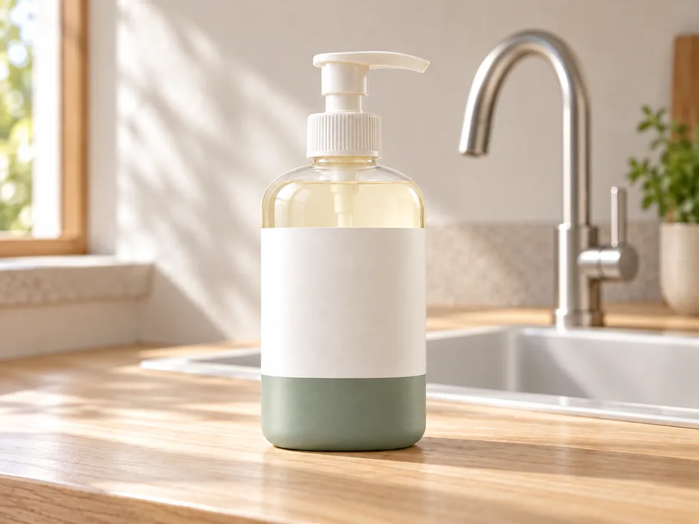
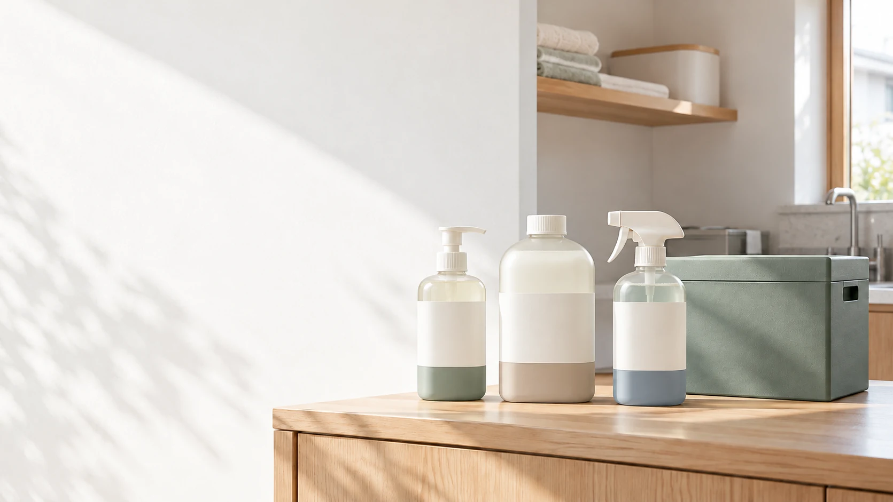
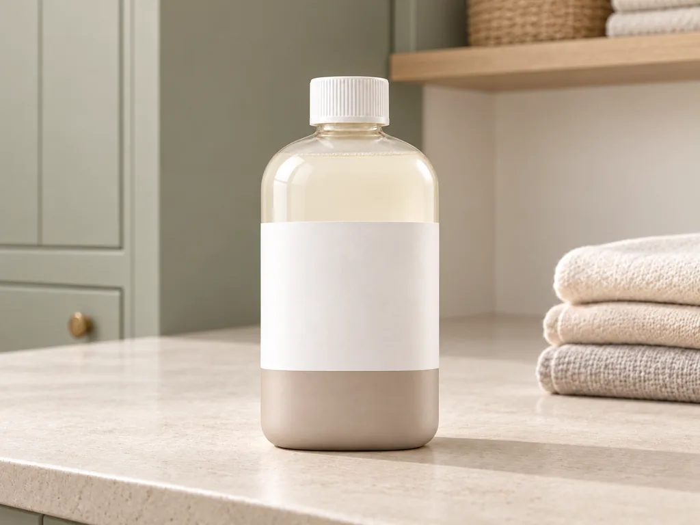
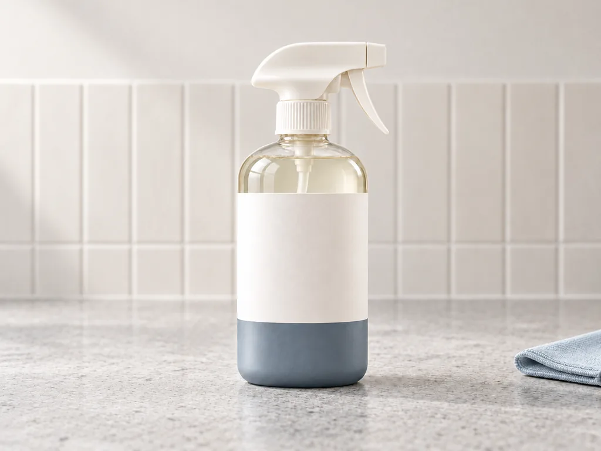
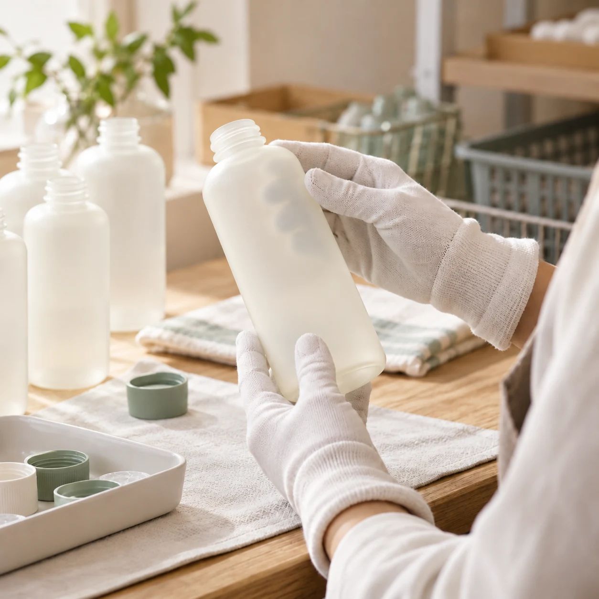

01 / KITCHEN
DISH
食器用洗剤
400mL・ポンプ容器

01 / PROBLEM
使い終わったら捨てる。その当たり前を、少しだけ変えられたら。
※架空案件の比較条件です。
02 / BENEFITS
次回配送時に空容器を渡すだけ。持ち込みの手間を増やしません。
初回は3種セット。次回以降は必要な商品を選んで受け取れます。
回収・再利用の状況を、後半のデータで確認できます。
03 / PRODUCTS
初回は3種の商品と回収用の配送ボックスをセットに。次回以降は必要な商品を選び、受け取り時に使い終わった容器を返す想定です。

01 / KITCHEN
食器用洗剤
400mL・ポンプ容器

02 / LAUNDRY
洗濯用洗剤
600mL・キャップ容器

03 / CLEANING
マルチクリーナー
400mL・スプレー容器
※商品写真は架空ブランドのAI生成イメージです。価格・配送周期は本作品では設定していません。
04 / HOW IT WORKS
家庭から事業者へ、そしてまた家庭へ。7つの工程を一続きの仕組みとして見せます。
家庭の工程 → 回収・洗浄・再充填 → 次の配送。再利用できない容器は素材リサイクルへ。
05 / IMPACT
使い続けた先の変化を、回収・再利用・削減の順に確認できます。
06 / COMPARE
商品利用の条件を揃え、容器の使い方と使用後の行き先を比較します。
| 比較項目 | 一般的な使い捨て方式 | RE:ROUTINE |
|---|---|---|
| 年間の商品利用 | —回分 | —回分 |
| 使用後 | 容器—本を廃棄・資源回収へ | 次回配送時に回収 |
| 再利用 | 再利用なし | 平均—回の再利用（想定） |
07 / PROGRESS
回収率を上げ、再利用回数を伸ばし、使い捨て容器の削減へ。3つの指標を因果順に示します。
—%／ 目標—%
目標比——回／ 目標—回
目標比——本／ 目標—本
目標比—08 / TRUST & FAQ
回収した容器は、検品を経て洗浄・再充填へ。再利用できない容器は素材リサイクルに回す想定です。

次回の商品を受け取る際に、使い終わった容器を渡す想定です。
検品後、再利用できる容器を洗浄・再充填します。再利用できない容器は素材リサイクルへ回す想定です。
09 / START A NEW ROUTINE
3つのホームケア用品と回収ボックスから始める、循環の新しい選択肢。